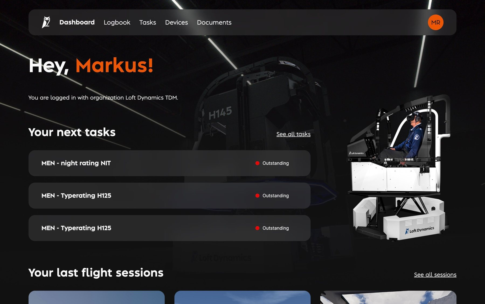
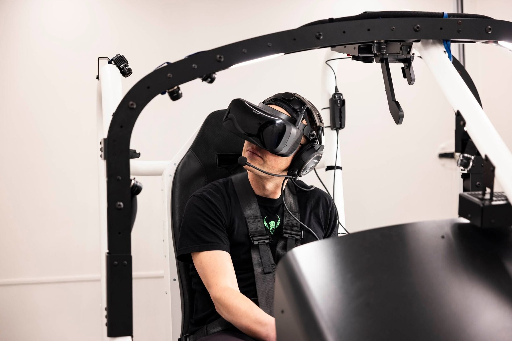
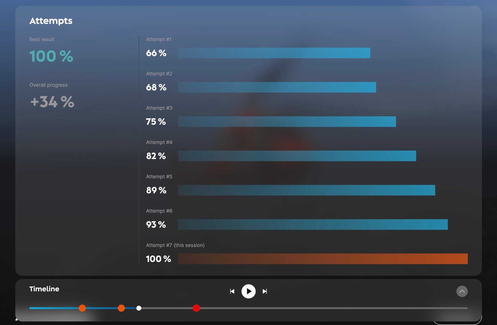

LoftHUB
Ein ungenutztes, von Ingenieuren gebautes Portal wurde zu LoftHUB, einem Debriefing-Tool mit Flugrouten, Daten, Video und Manöver-Timelines, das half, neue Kunden zu gewinnen.
- Kunde
- Loft Dynamics
- Land
- Schweiz
- Branche
- Aviatik, VR-Flugsimulation
- Jahr
- 2025–2026
- Meine Rolle
- UX/UI Design, Naming-Workshop, Landingpage, Videos ausgewählter Sessions
- Team
- Mit den Ingenieuren von Loft
Problem
Die Ingenieure von Loft hatten ein Kundenportal gebaut, damit Piloten ihre Simulator-Sessions nachschauen konnten. Kaum jemand nutzte es.
- Nichts, wofür sich das Einloggen lohnte: nur Datum, Uhrzeit, Ort, Simulator-ID und Kommentare der Instruktoren
- Schwer zugänglich: Zwei-Faktor-Authentifizierung nur per Authenticator-App, ohne Alternativen
Vorgehen
Jede Entscheidung lässt sich auf Evidenz zurückführen. Jeder Schritt hat eine ID, und jedes Insight und jede Entscheidung nennt die Evidenz, aus der es stammt.
S001
Source
Interviews mit Piloten und Instruktoren
Was sie nach einer Session sehen möchten und warum sie sich nicht einloggten.
S002
Source
Die Ingenieure hinter dem Portal
Was der Simulator aufzeichnet und was technisch angezeigt werden kann.
S003
Source
Naming-Workshop
Ein von mir geleiteter Workshop, um das «Customer Portal» umzubenennen.
E001
Evidence
Nichts, wofür man zurückkommt
Datum, Uhrzeit, Ort, Simulator-ID und Kommentare. Nichts über den Flug selbst.
Aus S001
E002
Evidence
Eine verschlossene Haustür
Zwei-Faktor-Authentifizierung nur per Authenticator-App.
Aus S001
E003
Evidence
Daten sind schon da
Der Simulator erfasst weit mehr, als das Portal zeigte.
Aus S002
I001
Insight
Das Debriefing ist der Grund zum Einloggen
Piloten wollen den Flug nacherleben; Instruktoren wollen einen Überblick fürs Debriefing.
Aus S001, E001
I002
Insight
Der Zugang darf keine Hürde sein
Das beste Debriefing nützt nichts, wenn der Zugang mühsam ist.
Aus E002
D001
Decision
Ein abspielbares Debriefing
Flugroute, Datengrafiken, VR-Aufnahmen und eine Timeline, nach Manövern gegliedert.
Aus I001, E003
D002
Decision
Anmerkungen der Instruktoren
Punkte auf der Timeline, die die Momente fürs Debriefing markieren.
Aus I001
D003
Decision
Einfacheres Onboarding
Ein leichterer Zugang, passend zur neuen Marke und Website.
Aus I002
D004
Decision
Ein Name: LoftHUB
Ein Teil der Loft-Suite, neben Loft Sim und Loft Home.
Aus S003
Lösung
Ich habe UX und UI von LoftHUB gestaltet, den Naming-Workshop geleitet und eng mit den Ingenieuren des ursprünglichen Portals zusammengearbeitet, damit jede neue Funktion technisch machbar war.
Briefing, Flug, Debriefing
LoftHUB rahmt jede Simulator-Session ein. Piloten sehen vor dem Flug ihre nächsten Aufgaben, fliegen die Session im Loft Sim und machen danach das Debriefing, am Simulator oder zu Hause auf dem Tablet.



Ein Debriefing, das Piloten öffnen wollen
Jede Session läuft jetzt wie eine Flugnachbesprechung ab, mit den Notizen der Instruktoren an den richtigen Stellen.
- Flugroutenkarte
- Simulator-Datengrafiken, die mehrere Datenkategorien in einer Grafik kombinieren
- VR-Bildschirmaufnahmen der Session
- Eine abspielbare Timeline, per Manövererkennung in Abschnitte gegliedert
- Anmerkungen der Instruktoren als Punkte auf der Timeline
- Einfacheres Onboarding und ein komplettes Redesign im Einklang mit der neuen Marke von Loft Dynamics; die Website führt direkt zu LoftHUB
Landingpage
Eine LoftHUB-Startseite, die zeigt, wie viel die Simulatoren genutzt werden, in geflogenen Stunden und eingespartem CO₂ gegenüber dem Training im echten Flugzeug, mit Videos ausgewählter Sessions, die ich gefilmt und geschnitten habe.


Was als Nächstes kommt
- Wettbewerbsmodus, mitgestaltet: Ein Pilot teilt eine Session als Challenge für andere, mit Rangliste. Vorgestellt am Loft Fest, mit der Vision regionaler und globaler Wettbewerbe. Dieselbe Ansicht dient auch der eigenen Verbesserung: Ein Pilot fliegt eine Challenge mehrmals und sieht jeden Versuch bewertet, mit bestem Ergebnis und Gesamtfortschritt.
- Highlight-Videos, automatisch geschnitten aus den Aufnahmen und den Anmerkungen der Instruktoren
- Evidenzbasiertes Training: Sessions vergleichen und statistische Ausreisser auf der Timeline markieren

Ergebnis
Piloten und Instruktoren begannen, das Portal zu nutzen.
LoftHUB wurde auch Teil der Verkaufsgeschichte: Es half Loft Dynamics, neue Kunden und Partner zu gewinnen, darunter Branchenführer.
«Die von ihm entwickelten Wireframes, Prototypen, User Flows, UI-Designs und Design-System-Komponenten zeichneten sich durch eine klare Struktur, hohe gestalterische Qualität und eine konsequente Orientierung an Nutzer- und Geschäftsanforderungen aus.»
 Fabi Riesen, Gründer und ehemaliger CEO & CTO · Loft Dynamics · Schweiz
Fabi Riesen, Gründer und ehemaliger CEO & CTO · Loft Dynamics · SchweizAus dem Referenzschreiben